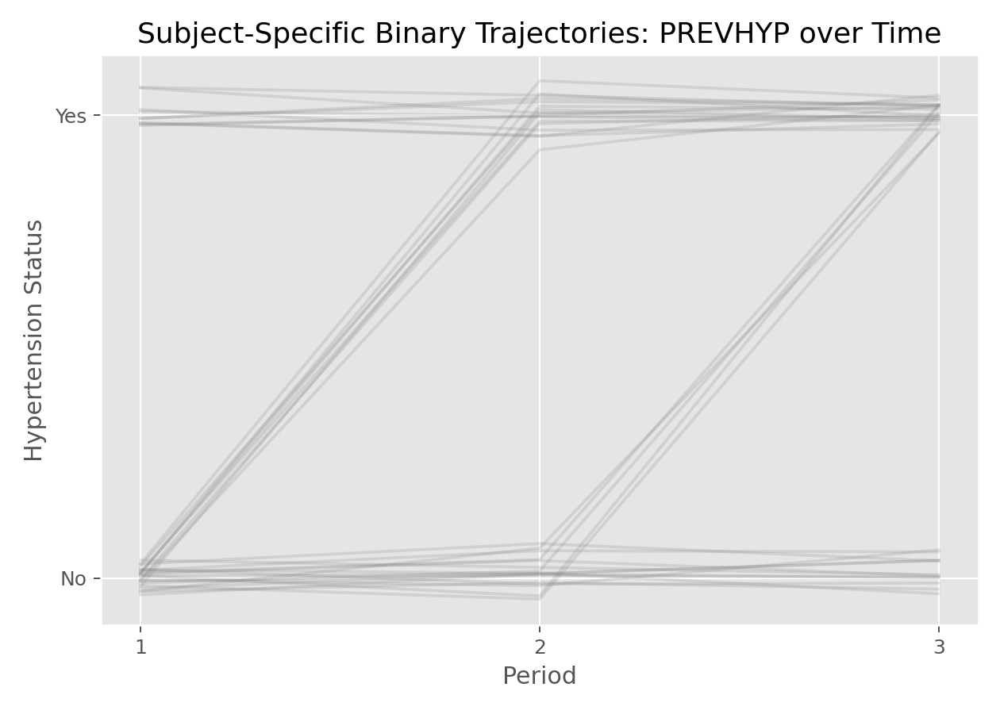

生存分析与纵向数据 · 04·02
广义线性混合效应模型
Generalized Linear Mixed-Effects Model, GLMM
广义线性混合效应模型（Generalized Linear Mixed-Effects Model, GLMM）
§1
方法概览
1.1 定义
GLMM 是把混合效应思想与广义线性模型结合起来的方法，适用于重复测量或层级数据中的二元、计数等非高斯结局。
1.2 它主要解决什么问题
- 研究问题：当结局是二元或计数，而且同一主体有重复测量时，如何同时建模个体差异和非独立性。
- 适用任务：纵向二元结局、重复计数结局、随机截距 / 随机斜率非高斯模型。
- 常见医学场景：多次随访的高血压状态、是否达标、某类事件是否发生。
1.3 直觉理解
GLMM 可以理解成“每个人都有自己的 Logistic 回归或 Poisson 回归曲线”，个体曲线围绕总体平均结构波动。
§2
数学形式
2.1 核心公式
$$ \begin{aligned} Y_{ij} &\sim \text{Exponential Family} \\ g(\mu_{ij}) &= \eta_{ij} = \mathbf{X}_{ij}^\top\boldsymbol{\beta} + \mathbf{Z}_{ij}^\top\mathbf{b}_i \\ \mathbf{b}_i &\sim N(\mathbf{0}, \mathbf{D}) \end{aligned} $$
2.2 参数或统计量含义
- 固定效应 $\boldsymbol{\beta}$：给定个体随机效应后的 subject-specific 效应。
- 随机效应 $\mathbf b_i$：主体特异性的偏移。
- 边际均值 $E(Y_{ij})$ 通常没有简单闭式表达。
2.3 关键假设
- 同一主体内观测相关。
- 给定随机效应后，观测条件独立。
- 分布族和连接函数与结局类型匹配。
§3
数据形式与输入输出
3.1 适合的数据形式
- 自变量类型：时间、处理组、性别、年龄等。
- 因变量类型：二分类或计数型。
- 数据结构：long format 重复测量数据。
- 是否适合高维数据：不是默认首选。
- 是否适合缺失较多数据：比传统方法更灵活，但仍需关注缺失机制。
- 是否适合删失数据：不适合删失结局本身。
- 是否适合重复测量数据：非常适合。
3.2 示例表格
例如 Framingham_data.csv 中可以把 PREVHYP 作为二元重复结局：
| RANDID | PERIOD | SEX | BMI | PREVHYP |
|---|---|---|---|---|
| 6238 | 1 | 1 | 28.73 | 0 |
| 6238 | 2 | 1 | 29.43 | 0 |
| 6238 | 3 | 1 | 28.50 | 0 |
| 11263 | 1 | 1 | 30.30 | 1 |
| 11263 | 2 | 1 | 31.36 | 1 |
3.3 输入与产出
输入
- 输入数据：long format 的二元或计数结局数据。
- 关键变量：主体 ID、时间、结局、协变量、随机效应结构。
- 需要预处理的内容：长表整理、缺失处理、结局编码。
产出
- 模型对象/统计结果：固定效应、随机效应方差、近似似然结果。
- 参数估计：subject-specific 效应。
- 预测结果：条件概率、个体特异曲线。
- 不确定性指标：标准误、区间估计。
§4
适用场景
- 适合：重复测量二元结局或计数结局，且关心个体层面效应。
- 不适合：只关心总体平均效应且不关心个体差异时。
- 使用前需要特别检查的点：随机效应结构、时间形式、拟合收敛、数值积分或近似方法。
§5
实现
常用包：
statsmodels
from statsmodels.genmod.bayes_mixed_glm import BinomialBayesMixedGLM
model = BinomialBayesMixedGLM.from_formula(
"PREVHYP ~ PERIOD + SEX",
{"RANDID": "0 + C(RANDID)"},
data=df
)
result = model.fit_vb()
print(result.summary())
常用包：
lme4
library(lme4)
fit <- glmer(
PREVHYP ~ PERIOD + SEX + (1 | RANDID),
family = binomial(link = "logit"),
data = df
)
summary(fit)
§6
结果如何解释
- 核心结果看什么：固定效应方向、随机效应方差、个体异质性。
- 每个主要参数如何解释：在给定同一主体随机效应时，协变量变化如何影响 log-odds 或 log-count。
- 临床或医学意义如何表达：GLMM 更适合回答“在同一个体层面”效应如何变化。
- 常见误读：GLMM 的系数通常不等于边际平均意义下的 GEE 系数。
§7
推荐可视化
- 个体二元轨迹图。
- 个体拟合概率曲线。
- 随机截距分布图。
7.1 图像示例
下图展示部分受试者的高血压状态随时间变化轨迹，突出 GLMM 所关注的个体特异性结构。

§8
优势、局限与常见坑
优势
- 同时处理相关数据和非高斯结局。
- 可建模个体间异质性。
- 适合 subject-specific 解释。
局限
- 拟合计算更复杂。
- 不同近似方法可能给出略有差异的结果。
- 结果解释较 GEE 更偏条件化。
常见坑
- 把 GLMM 系数直接当成总体平均效应解释。
- 忽视收敛警告。
- 数据太稀疏却拟合过于复杂的随机效应结构。
§9
与相近方法的区别
- 和 Logistic / Poisson 回归的区别：GLMM 显式处理主体内相关性。
- 和 GEE 的区别：GLMM 更偏 subject-specific，GEE 更偏 population-average。
- 和 LMM 的区别：LMM 针对连续正态结局。
§10
医学研究中的典型应用
- 多次随访高血压状态建模。
- 反复记录的二元症状或计数事件分析。
- 同一受试者多次门诊达标/未达标研究。
§11
相关方法
§12
参考资料
- Molenberghs G, Verbeke G. Models for Discrete Longitudinal Data. Springer; 2005.
- statsmodels Developers.
statsmodels.genmod.bayes_mixed_glm.BinomialBayesMixedGLM. statsmodels API Reference. https://www.statsmodels.org/stable/generated/statsmodels.genmod.bayes_mixed_glm.BinomialBayesMixedGLM.html （访问日期：2026-07-02） - CRAN. Package
lme4. https://cran.r-project.org/web/packages/lme4/index.html （访问日期：2026-07-02）
— 黑盒词典 · 04·02 —